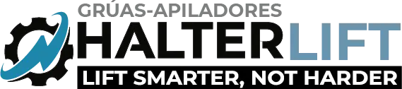
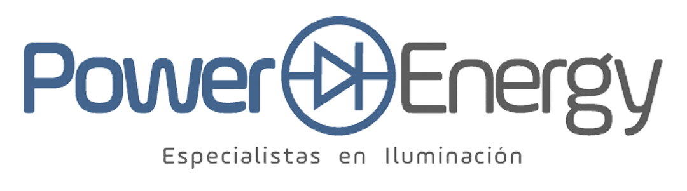

Cámbiate de agencia para el 2027
Campaña Meta + Performance Max · Muller y Pérez · borrador 23 nov 2026
Meta: 3 clientes nuevos firmados en diciembre. Nada creado ni activado: todo queda para tu OK.
1. Idea central
| Ángulo (dolor) | Gancho | Lo que mostramos | Pieza |
|---|---|---|---|
| Mala comunicación | “¿Hablar con tu agencia es pedir audiencia al Papa?” | Equipo con nombre y apellido que responde | Reel 03 · M1 · M4 |
| Dicen que saben, no ves datos | “Te dicen que saben. Pero no ves los datos.” | Costo por cliente a la vista | Reel 02 · M2 |
| Sin paneles | “¿Esperas el informe de fin de mes para saber cómo vas?” | Panel en vivo por cliente | Reel 03 · M2 · landing |
| No apareces en ChatGPT | “¿Te recomienda ChatGPT?” | Medición semanal en IA | Reel 01 · M3 |
| Desconfianza | “No lo decimos nosotros.” | 115 reseñas 5.0 · #2 AdWorld · 50+ clientes | M5 · PMax |
2. Datos verificados (qué se puede decir)
| Afirmación | Estado | Fuente y fecha |
|---|---|---|
| 5.0 en Google con 115 reseñas | Sí | Ranking AdWorld Chile (muestra los datos de Google), revisado hoy 23 nov 2026; coincide con cifras oficiales |
| #2 en el Ranking AdWorld de agencias de marketing digital en Chile | Sí | adworldlatam.com/agencias/marketing-digital/chile, “actualizado noviembre 2026”, 11 agencias: Bigbuda 84, M&P 65, Milimetrix 63. Revisado hoy 23 nov |
| “#1 de las que operan solo en Chile” | No usar todavía | No pude comprobar que Bigbuda opere fuera de Chile (su sitio es bigbuda.cl, con versión en inglés). Si tienes la prueba, se agrega |
| Google Partner | Aún no | Somos Miembro; falta que 2 personas certificadas queden vinculadas en Skillshop (revisar mié 25). Abajo está la variante para cuando salga la insignia |
| Services Partner de OpenAI | Sí, solo en texto | Sin logo de OpenAI en los anuncios |
| Partner de Claude / Anthropic | No decir | Postulación enviada, sin respuesta |
| Desde 2020 · 50+ clientes | Sí | Cifras oficiales M&P |
| %, ROAS, “x clientes más”, “diagnóstico gratis” | Nunca | Reglas de M&P |
3. Reels
Reel 03 · Cámbiate 2027 (nuevo, 21,5 s)
Hecho con el robot, mismo estilo que los reels aprobados. Gancho Papa → “dicen que saben” → panel + equipo + IA → prueba verificable → cierre. También en 4:5 para feed.
Reels existentes que se reusan
01 Te recomienda la IA (19,5 s) → ángulo ChatGPT.
02 Costo por cliente (24,5 s) → ángulo datos.
M4 · Guion para que lo grabes tú (30 s, celular vertical)
3–10 s: “Si este año te dejaron en visto, o te dicen que todo va bien pero nunca ves los números, no es tu culpa.”
10–20 s (mostrar el panel en la pantalla del computador, con datos de ejemplo): “En M&P cada cliente tiene un panel en vivo y un equipo con nombre y apellido. Y medimos cada semana si ChatGPT te recomienda.”
20–27 s: “Tenemos 115 reseñas con nota 5.0 en Google. Léelas.”
27–30 s: “Antes de cerrar tu plan 2027, conversemos.” Cierre con el robot y mulleryperez.cl.
Sin guion leído: que suene a conversación. Paneles reales solo con datos difuminados.
4. Meta Ads · vista previa
Campaña de clientes potenciales con formulario instantáneo de mayor intención. Preguntas: 1) ¿Trabajas hoy con una agencia? 2) Inversión mensual en publicidad (menos de $1M / $1–3M / más de $3M) 3) Rubro 4) Teléfono. Chile, 28–60 años, Advantage+ con señales: dueños, gerentes, marketing. Ubicaciones: Reels, Feed, Stories de IG y FB.
En M&P tienes un equipo con nombre y apellido que te responde, y un panel en vivo con tu inversión y tus resultados.
5.0 en Google con 115 reseñas. Cámbiate de agencia para el 2027.

Si tu agencia no te lo puede mostrar, el problema no es tu presupuesto.
En M&P lo ves en un panel en vivo, todos los días. Conversemos tu 2027.

¿Te recomienda a ti o a tu competencia?
En M&P medimos cada semana qué marcas nombran las IA y trabajamos para que la tuya aparezca. Cámbiate para el 2027.

(por grabar)
★ 5.0 en Google con 115 reseñas
#2 en el Ranking AdWorld de agencias de marketing digital en Chile (nov 2026)
50+ clientes desde 2020
Cámbiate de agencia para el 2027.
* Tarjeta de logos del carrusel M5: confirmar con Christopher (ver punto 7).
5. Performance Max · grupo de recursos
Objetivo: clientes potenciales (formulario de la landing). URL final: mulleryperez.cl/cambiate-de-agencia. Con anuncios de video (reels 01–03), imágenes del robot y logo.
Cámbiate en 2027: datos a la vista y un equipo que responde.
Google Ads, Meta Ads, SEO y GEO con panel en vivo y personas con nombre y apellido.
Medimos cada semana si ChatGPT y Gemini recomiendan tu marca. Te mostramos cómo.
Excluir: búsquedas de empleo (“trabajo”, “práctica”, “sueldo”), marca propia en una campaña aparte.
Extensiones: sitelinks Panel en vivo · Reseñas en Google · SEO y GEO · Casos de éxito. Textos destacados: Equipo que responde · Panel por cliente · Desde 2020 · 115 reseñas 5.0.
Títulos (máx. 30)
| 1 | Cámbiate de agencia en 2027 | 27/30 |
| 2 | Agencia con datos a la vista | 28/30 |
| 3 | Panel en vivo de tu inversión | 29/30 |
| 4 | 5.0 en Google, 115 reseñas | 26/30 |
| 5 | #2 Ranking AdWorld Chile | 24/30 |
| 6 | ¿Tu agencia no te contesta? | 27/30 |
| 7 | ¿Te recomienda ChatGPT? | 23/30 |
| 8 | Google Ads y Meta Ads | 21/30 |
| 9 | SEO y GEO para aparecer en IA | 29/30 |
| 10 | Equipo que sí responde | 22/30 |
| 11 | Muller y Pérez, desde 2020 | 26/30 |
| 12 | Más de 50 clientes en Chile | 27/30 |
| 13 | Personas + IA trabajando | 24/30 |
| 14 | Mide tu costo por cliente | 25/30 |
| 15 | Conversemos tu 2027 | 19/30 |
Títulos largos (máx. 90)
| 1 | ¿Hablar con tu agencia es pedir audiencia al Papa? Cámbiate a una que responde | 78/90 |
| 2 | Panel en vivo con tu inversión y tus resultados. Sin esperar el informe de fin de mes | 85/90 |
| 3 | 5.0 en Google con 115 reseñas y #2 en el Ranking AdWorld de agencias en Chile | 77/90 |
| 4 | Te dicen que saben, pero no ves los datos. En M&P los ves todos los días | 72/90 |
| 5 | Aparece cuando tu cliente le pregunta a ChatGPT. Medimos tu marca cada semana | 77/90 |
Descripciones (máx. 90; la 1 ≤ 60)
| 1 | Cámbiate en 2027: datos a la vista y un equipo que responde. | 60/90 |
| 2 | Google Ads, Meta Ads, SEO y GEO con panel en vivo y personas con nombre y apellido. | 83/90 |
| 3 | 5.0 en Google con 115 reseñas. #2 en el Ranking AdWorld de agencias de Chile. | 77/90 |
| 4 | Medimos cada semana si ChatGPT y Gemini recomiendan tu marca. Te mostramos cómo. | 80/90 |
| 5 | Agenda una conversación de 30 minutos y revisamos juntos tu marketing actual. | 77/90 |
6. Landing /cambiate-de-agencia (propuesta, no publicada)
Cámbiate de agencia para el 2027.
Datos a la vista, un equipo que responde y tu marca medida en Google y en ChatGPT.
★ 5.0 en Google · 115 reseñas | #2 Ranking AdWorld Chile (nov 2026) | 50+ clientes desde 2020
Conversemos 30 minutos7. Fotos y logos de clientes



Confirmar con Christopher: estos logos son de clientes activos y ya están en mulleryperez.cl, pero no hay autorización escrita para usarlos en publicidad pagada. Mientras no confirmes, los anuncios salen sin logos. Testimonio en video de Power Energy (30 s, ya existe) también queda por confirmar. No usé fotos de personas de clientes ni ex clientes (4Life, Distec, Fuxion, etc.).
8. Plan diciembre para 3 clientes
| Fecha | Qué | Quién |
|---|---|---|
| Mar 24 – jue 26 nov | Tu OK a piezas, presupuesto y logos; tu reel M4 grabado | Christopher |
| Jue 26 – vie 27 nov | Landing publicada y probada; campañas armadas en pausa; vista previa por ubicación | M&P / Fran |
| Lun 30 nov | Activar Meta + PMax (con tu OK) | Fran |
| Todo diciembre | Cada lead llamado por Arturo antes de 2 horas hábiles; reunión de 30 min con Christopher; propuesta en 48 h | Arturo + Christopher |
| Lun 7 y 14 dic | Corte: costo por lead y por reunión; apagar el anuncio más débil, subir el mejor | Fran |
| Vie 18 dic | Último empuje: “empieza en enero sin cortar nada” | Todos |